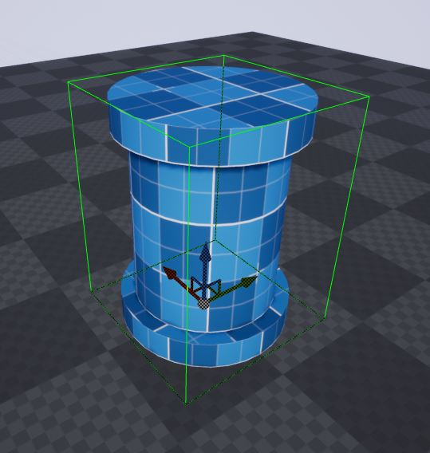
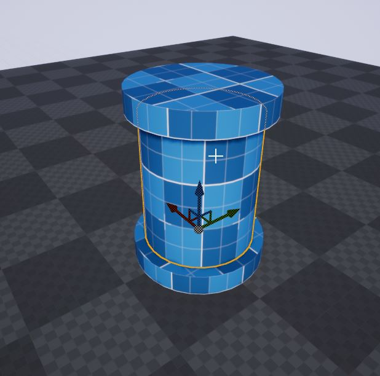
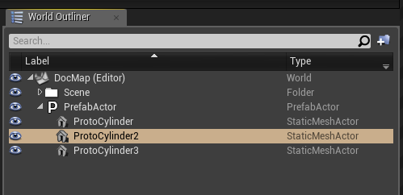

Prefab Selection¶
Select an existing prefab actor on the scene by clicking on it and move it around as a single unit. A selected prefab would have a green outline to it
Note
The green outlines will not show up if the editor is in Game Mode. Press the G key in the editor viewport to toggle it

Selected Prefab¶
Prefab Item Selection¶
Click on the prefab again to select the item inside the prefab

Selected Prefab¶
Clicking on the prefab toggles between the prefab and the items inside it. This is useful when you want to modify the contents of a prefab (if you are using nested prefabs, the selection would cycle between the different prefab levels)
You can also select the items inside the prefab from the World Outliner

Selected Prefab¶